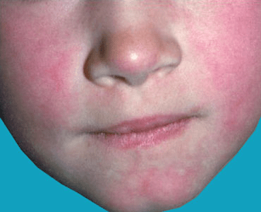
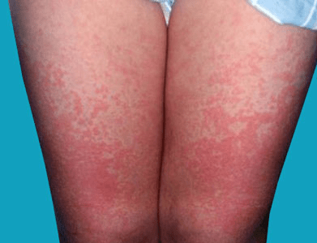

Fifth disease (erythema infectiosum), also called slapped-cheek disease, is a common illness in young children due to infection with parvovirus B19. Fifth disease is spread by contact with others who are infected, specifically by exposure to fluid from the nose (respiratory secretions). The illness lasts approximately 5 days, but the rash may keep coming back for a few weeks, particularly with exercise, heat, fever, or stress. If a pregnant woman becomes infected, the infection can be harmful to the unborn baby. Fifth disease can also cause arthritis, although this is more commonly seen in infected adults.

